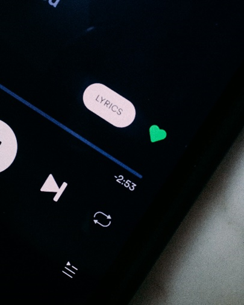
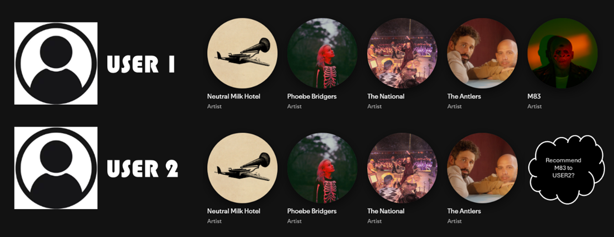
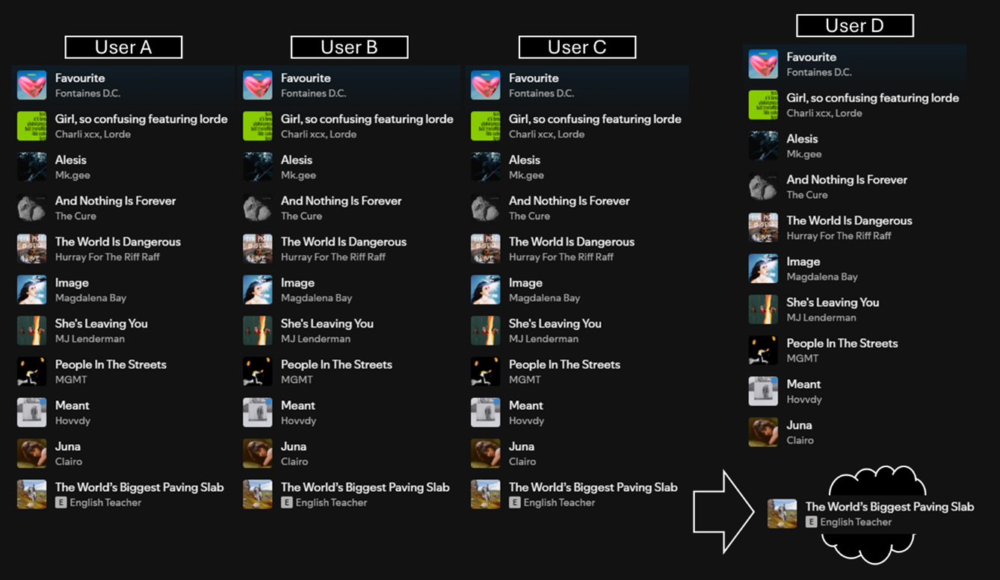
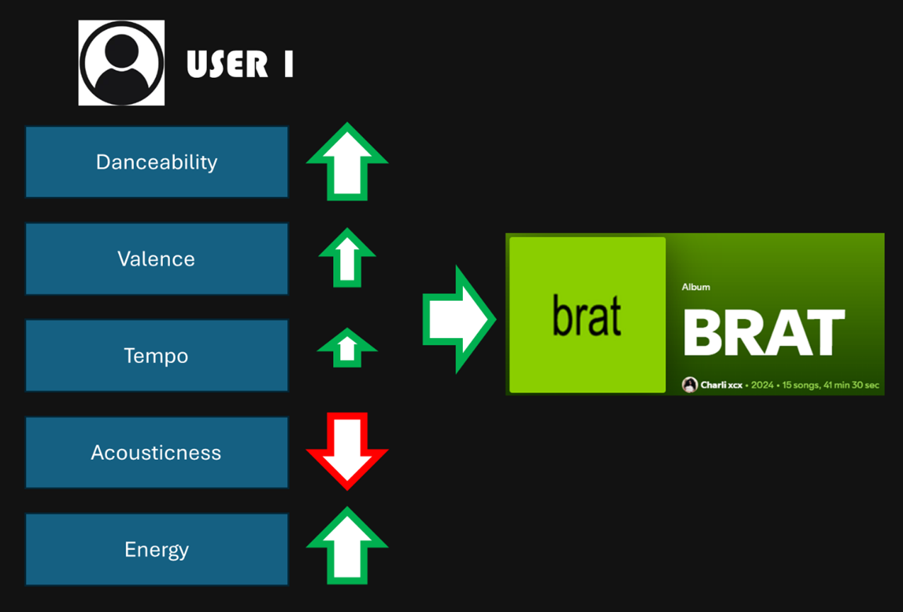
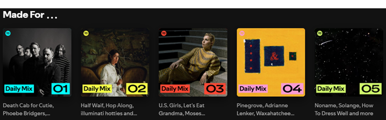

The use of data and machine learning has had a major impact across most industries, with the music industry being no exception. Platforms like Spotify, Apple Music, and YouTube Music have played a major part in the decline of physical media as a means for music consumption as they have changed not just how we consume music, but how we discover it. All these platforms use interesting and powerful recommendation systems to customize the music listening experience for every user, helping them find new songs, albums, and artists based on our tastes. For aspiring data scientists, understanding how these systems work is not only interesting, but it also frames a great example of how data science can have a direct impact on our daily life, as well as on businesses and the people behind them.

The Importance of Recommendation Systems
Recommendation systems are a key player of how streaming platforms adapt to each individual user. These systems do more than just suggest songs, but drive user engagement and increase platform revenue. In other words, when Spotify gets into the habit of suggesting a song or artist to a user, it leads to more streams, more exposure, and higher earnings for the platform and the artist.
The impact of these recommendation systems, when scaled, can also be seen in how they shape the musical landscape and the way music is consumed globally, given that common interests in music creates trends until a song becomes inescapable.
We will dive into the key techniques behind recommendation systems, such as Collaborative Filtering and Content-Based Filtering, and explore how platforms like Spotify create User Taste Profiles to make personalized recommendations.
Collaborative Filtering: Learning from Users
One of the most common techniques used in music streaming recommendation systems is collaborative filtering. This method works by analyzing patterns in user behavior, for example, what you listen to, when you listen to certain songs, and how you interact with music. There are two main types of collaborative filtering:
- User-based Collaborative Filtering: This approach looks for similarities between users. For example, if you and another user listen to the same artists, the system will recommend songs that the other person enjoyed as the algorithm will predict that you could like them too.

- Item-based Collaborative Filtering: Instead of focusing on users, this technique looks at the relationships between songs. If many users who listen to a particular song also enjoy another song, the system will suggest that second song to you. It’s a great way to discover music that you may not have otherwise encountered.

Collaborative filtering works by analyzing both implicit (behavioral: plays, skips, or repeat listens) and explicit feedback (likes, ratings, or playlist additions). The more data the system has, the better it can predict your musical tastes and make accurate recommendations.
Spotify, for example, uses collaborative filtering to suggest new songs based on your past listening behavior and what similar users enjoy. This allows the system to continuously improve, offering more personalized playlists and expanding your music taste within the platform.
Content-Based Filtering: How do you describe a song?
Another very useful technique used in music streaming recommendations is content-based filtering. This approach looks at the characteristics of the music itself, such as genre, tempo, lyrics, and mood. The system analyzes the features of the songs you’ve listened to and recommends tracks that share similar characteristics.
For example, if you frequently listen to high-energy pop music with fast tempos, the system will suggest other pop songs with similar characteristics. If you like jazz, the system will try to find other jazz tracks that match the style you enjoy.

Content-based filtering is useful in cases where collaborative filtering might not have enough data, like when a user is new to the platform or when a song is newly released. This technique can still create recommendations based on the features of the song rather than relying on user behavior patterns.
User Taste Profiles as a Personality Trait
Both collaborative and content-based filtering techniques come together to create user taste profiles. These profiles represent a user’s musical preferences based on their listening habits, behaviors, and interactions. These profiles enable streaming platforms like Spotify to deliver highly personalized experiences.
For instance, Spotify’s Discover Weekly playlist is the most popular example of how these taste profiles work and how the algorithm can “read your mind” as it continuously recommends artists and songs that you like. Over time, as you continue to listen, the system updates your taste profile, refining its suggestions to match your evolving preferences.

Data Science = Direct Impact to the Artist
While recommendation systems are designed to enhance the user experience, they also have a significant impact on the music industry. For artists, being featured in a recommendation can drastically increase their visibility. The more often their songs are recommended to users, the more likely they are to gain new listeners and, as a result, more streams.
For instance, lesser-known artists can benefit from the discovery process facilitated by recommendation systems. This is especially important for independent and emerging artists who may not have the same visibility as mainstream stars.
We will not talk about streaming monetization, because then this post will never end. However, the direct relationship between recommendation systems and artist earnings highlights the importance of understanding these algorithms from a data science perspective.
As a data scientist, knowing how to optimize these systems is critical, not just for improving user experience but for driving business outcomes.
I Feel Like I’ve Seen This Before…
For aspiring data scientists, diving into recommendation systems is a great way to understand how machine learning works in real-world applications. Just as we used music streaming platforms in this post, these techniques represent an interesting technique used across different products (No, Amazon, I don’t want to buy another vacuum cleaner. You know I already bought one.) and platforms which have demonstrated direct impact to user engagement and business success.
Conclusion
Recommendation systems have become drivers of the music streaming experience. By combining techniques like collaborative filtering, content-based filtering, and user taste profiles, platforms like Spotify are able to deliver customized, engaging recommendations. For data scientists, understanding how these recommendation systems work provides a valuable opportunity to apply machine learning techniques to real-world problems and understand the broader impact of data science on the music industry and beyond.
References
Spotify. (n.d.). Understanding Recommendations. Spotify. Retrieved from https://www.spotify.com/ca-en/safetyandprivacy/understanding-recommendations
Music Tomorrow. (2022). How Spotify’s Recommendation System Works: A Complete Guide. Music Tomorrow. Retrieved from https://www.music-tomorrow.com/blog/how-spotify-recommendation-system-works-a-complete-guide-2022
Ichigo V. (2021). Detailed Explanation About Collaborative Filtering. Medium. Retrieved from https://medium.com/@ichigo.v.gen12/detailed-explanation-about-collaborative-filtering-eab116e3b28b